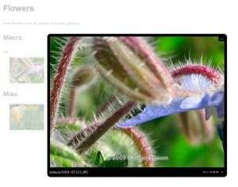

Pirobox
www.pirolab.it/pirobox/

Features
- Intelligentes Vorabladen von Bildern
- Navigation mit Hilfe von Vorschaubildern
- Unterstützung für Bildbeschriftungen
- "Download Originals"-Link
- Anzeige von EXIF-Daten
- Javascript/AJAX basiert. Akzeptable Degradation, wenn Javascript nicht verfügbar.
- Unterstützung für mehrere Storyboards pro Seite
- Schwarzes, weißes und schattiertes Layout
- Diashow